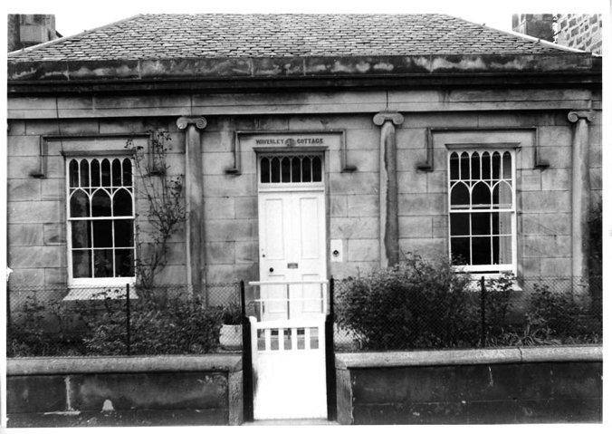
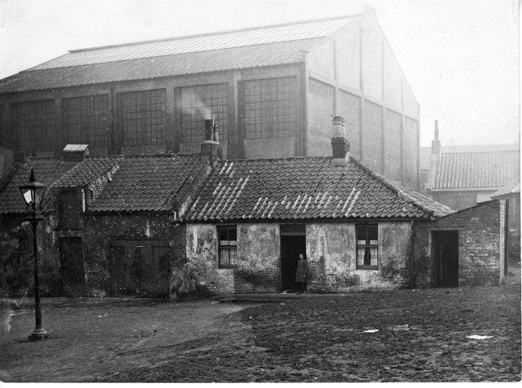
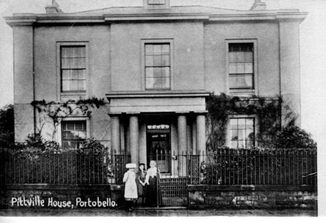
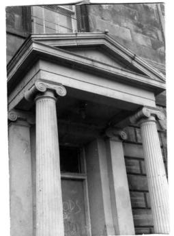
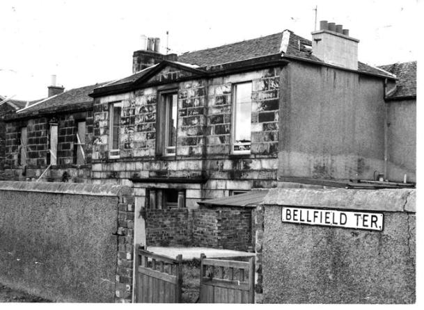
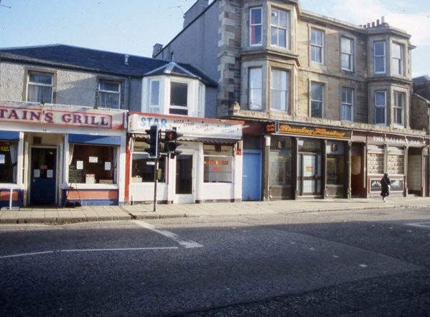
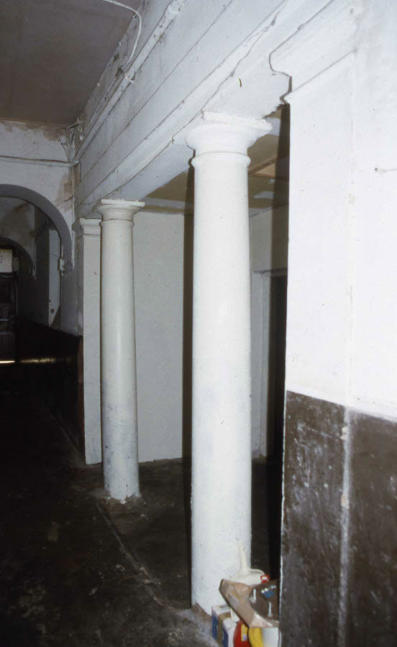

The Architectural Development of Portobello in the early 19th Century
John M Stewart
This article concentrates on the period from 1770 to 1840 and examines some social and historical developments that explain how Portobello came to be developed in the way it was. Knowing who cam tostay in Portobello, and why and when, helps towards an understanding of why certain types of houses came to be built. Original street names are used throughout but some Edinburgh streets were renamed in the 1960s and Tower Street became Figgate Street; Wellington Street is now Marlborough Street; Melville Street was renamed Bellfield Street and Pitt Street was changed very slightly to Pittville Street.

The first housing to be built in Portobello followed upon William Jameson's commercial development of clay deposits found in the 1760's near the Figgate Burn. The establishment of brick and tile works was soon followed by other industries such as soap works, a flax mill, several potteries, a glass works and a white lead works. Housing for the workers involved in such industries soon came to be built and wereconcentrated largely in three areas; round the Figgate Burn itself;
near Wilson's Park and near the former Windsor Place church as there was a clay pit on the site of what was later to become Mount Lodge. Such housing was probably simply and crudely built, in single storey brick with a pantiled roof, similar to that in Rosebank Square (pictured above), demolished in the mid- 1930s to make way for the Open Air Swimming Pool and in Berry Square, off Tower Street, which survived until the 1970's. Surviving small scale "working - class" housing in Portobello is much later, e.g. Thomas Tough's Adelphi Place development of the 1860's, built to house his pottery workers.

The next type of housing to be built was of a very different nature. In 1767 William Jameson built as his summer residence, Rosefield House, near what was later to become Adelphi Place. Soon, other villas followed. Ramsey Lodge, Mount Charles and Shrub Mount, later the home of Hugh Miller, were built between 1770 and 1780. In the 1790's Jessfield, demolished to build the present library, Rosefield Cottage now Rosefield Park and Williamfield were built. Of these, only Shrub Mount, now much altered, survives. These villas were simple two storey houses, often set amid large orchards and accessible off lanes, as no streets existed at that time. The Tower, erected about 1785 remains, built not as a house as such, but as a summer house at the bottom of the garden of Shrub Mount, whose policies stretched from the High Street to the sea. There were three small farms in Portobello at that time. These were Portobello Park, later Park House, off Wellington Street, Rabbit Ha', demolished to build the parish church in Melville Street, and Middlefield which later formed the Brighton Park area. Scotland Delineated, published in 1799, describes Portobello as, "A rising village of about; 300 inhabitants employed in the manufacture of bricks, tiles, jars, brown pottery and white stoneware”. As yet, there is no reference to Portobello as a watering place. However, in 1795, one John Cairns was advertising in an Edinburgh newspaper that he would provide bathing machines at Portobello. Until then Leith had been where Edinburgh people went to bathe but commercial and industrial expansion there prompted the growth of Portobello as a place to come and bathe and to live during the summer. Indeed, it could be argued that Portobello is Scotland's only planned Regency Spa.

Between 1800 and 1825, much of Portobello was laid out as we see it today, on roughly a grid plan, mainly between the High Street and the sea and progressing from west to east. Many of the houses were built as speculative ventures, either to sell, or to rent out either for the summer season or for the year. Attitudes towards property owning were different then and many comfortably well-off families were content to rent the house they lived in on an annual basis. These streets were laid out and built in distinct phases. Bath Street and Tower Street were laid out in 1801/1802, the houses mainly being built between 1805 and 1825. The loss in the 1970s, of Tower Street is to be particularly regretted. Consisting mainly of detached and semi-detached two-storey brick houses,elegantly detailed, some with rich internal plasterwork, it was a street which could and should have been saved. It is ironical that, while supplying much of the brick to construct the interiors of the New Town, Portobello now has few brick built houses surviving. Numbers 207 to 211 Portobello High Street, opposite Regent Street, are the main exceptions. Regent Street and Wellington Street were laid out around 1815 - 1816 by the builder Lewis Wallace who was involved in building much of the Edinburgh New Town, including parts of Drummond Place and Heriot Row, to the designs of architects like Robert Reid.
The next phase included the building of Melville Street, Pitt Street and John Street. These were laid out by the architect Robert Brown, who himself lived in Pitt Street. Robert Brown was an architect of considerable distinction, designing much of the New Town, including Melville Street, St. Stephen's Street, and Manor Place. He also designed what is now the Queen's Hall in South Clerk Street. The development and building of the Brighton / Rosefield area, around 1823, by the architect John Baxter, was the next major phase of building. Baxter provided not just the plans for these streets, but also the elevations for the buildings themselves. Thus this area is one of the most attractive in Portobello, the uniform facades with their linking screen walls giving these streets a distinction lacking in most other Portobello streets. This area is also unspoiled by later infill buildings of unsuitable scale as in the case of Bath Street and Marlborough Street. Portobello was now established both as a fashionable summer residence and also as an attractive place to stay all the year round. Houses were soon followed by other buildings deemed necessary to a small "town" which was also a fashionable resort. A thrice daily coach service to Edinburgh was set up in 1806 which year also saw, the opening of the first hot / cold sea water baths and the establishment of a Post Office. The first of Portobello's many churches was built in Melville Street in 1809. No spa town was without its assembly rooms and these were built in 1825 at the top of Bath Street. They became the Royal Hotel and the building is now divided into apartments. The gable and mansard roof are later additions. The steady growth of Portobello can be seen by comparing the population census of 1821 with that of 1831. A population of 1,912 (334 houses) in 1821, had risen to 2,781 (517 houses). Baird however, in Annals of Duddingston and Portobello, estimates that by 1833 an additional summer population of not less than 2000 should be added. This gives an indication of just how much accommodation must then have been available during the summer months. A report on the burgh of Portobello, published in 1833 states that, "Although it does not contain houses which can be called large or spacious, it has a greater population of respectable and comfortable dwellings than is usually found in a place of its size". It goes on to comment that Portobello is, "Much resorted to by visitors in the bathing season and has also a small permanent society, consisting chiefly of retired families". Baird also makes this comment, stating that in the early 19th century what Portobello lacked was a middle class, consisting as it did of gentry, retired military and the working classes! Among the reasons for Portobello's popularity as a place of retirement for soldiers and sailors was that along with its sea side location, the barracks at Piershill were nearby and the beach was regularly used to drill cavalry.
An examination of the first of the Edinburgh Directories to contain a detailed section on Portobello, that of 1835, partly explains why so many military tombstones can be found in local churchyards, notably St. Mark's. Listed as Portobello residents that year are 6 Royal Naval surgeons, 4 excise officers, an inspector of army hospitals, 11 captains, 4 Royal Naval lieutenants, 1 major, 6 colonels’ ladies, 2 captains’ ladies and an admiral's lady.

The directory also gives an indication of other necessities of life in a spa town. Fox's circulating library is to be found in the High Street, Miss Hutcheson's female school in Bath Street, Baird, portrait painter at 1 West Brighton Crescent, while Miss Syme offered drawing classes and there were three milliners to choose from. At the other end of the scale, there also appear to have been 11 licensed spirit dealers. Two other points are worth considering from the information the 1835 directory provides when thinking about who visited Portobello for the season and also who lived there permanently. While many of the lodgings or boarding establishments advertised are in areas you would expect a reasonably affluent family to stay - streets like Brighton Place and Bath Street, many other lodgings are in streets like Wilson's Park and Berry Square. Did less affluent families also come to Portobello to "take the air" for a few days, or were people less fussy then about the lodgings they took, the sea side air being of greater importance? The other surprising factor is the number of female householders, a total of 122 (10 "Misses", 36 "Miss" and 76 "Mrs."). Perhaps no one other than me finds this unusual, but it is tempting to think that army/navy widows found the small size and scale of many Portobello houses and the gardens they enjoyed, more attractive than say larger New Town houses without gardens. Such thoughts are however, purely speculative. Thus, by 1835 Portobello was well established as a holiday town and a residential area. An interesting light, if that is the right word to use, on Portobello life in 1833 can be seen in a report drawn up by James Newlands, of the Post Office, one of Portobello's first Baillies. Lamenting a recent deplorable rise in crime, he blames the dark streets, (gas street lighting only began to appear in 1835) and comments that many residents in remoter streets and houses are reluctant to stay overnight in Portobello and that houses formerly let for £40 per annum now only secure £12 - £15. A reminder of the practice of shutting up houses over the winter can perhaps be seen in the window shutters to be found on the outside of several Portobello houses, such as numbers 5, 6 and 7 John Street. With the exception of Tower Street, most of the Georgian streets survive, some better than others. The main casualties over time have been the villas, hardly any of which now survive. If one looks at the maps of Portobello, John Woods of 1824 and Archibald Sutter's more detailed and more accurate one of 1856, it can be seen that many of the Victorian tenements in the High Street, on the Promenade, in Bath Street and in present day Marlborough Street, occupy the sites of now demolished villas and their large gardens. One of the few surviving villas is Bellfield, in Bellfield Terrace, although it has been subdivided and turned back to front to form 20 - 26 Straiton Place. Almost hidden is the front door of the villa with its distinguished Roman Doric pilastered entrance. One wing only remains of David Laing's East Villa, now tucked away as 1a Laing Terrace while Shrub Mount is now hardly recognizable as an 18th century villa.

Although much altered Bellfield is one of Portobello’s few remaining villas.

What remains of Shrub Mount showing above the cafes on Portobello High Street

The pillars and original portico of Shrub Mount can still be seen in the passageway that separates it from the adjoining building, and entered by the blue door shown in the previous photograph
Portobello's Georgian buildings are not grand; they were not intended to be, but they are to a very large degree, well designed and elegantly detailed. They also reflect the original reasons for their building and an awareness of these reasons adds to our appreciation of the architectural qualities of the buildings themselves.